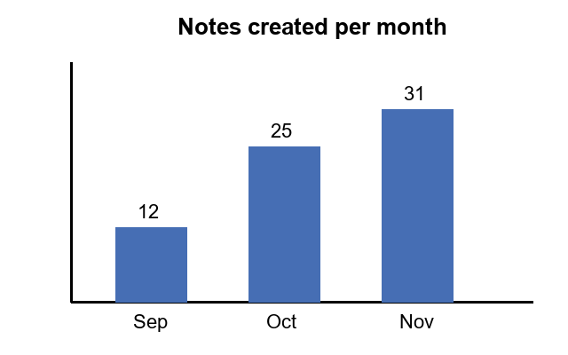

Draft translation: please check it with a native speaker before release.
Cette page fait partie de la démonstration OCR. Statut : MVP pour le graphique ; les croquis sont une étape ultérieure.
Un graphique à barres garde ses nombres dans l'image. NoteCraft lit les mots qu'il peut lire, comme le titre et les étiquettes. Les barres ne sont pas encore lues comme des nombres.

Un croquis à la main est plus difficile. Ses mots peuvent être lus, mais ses boîtes et ses flèches ne sont pas encore comprises.